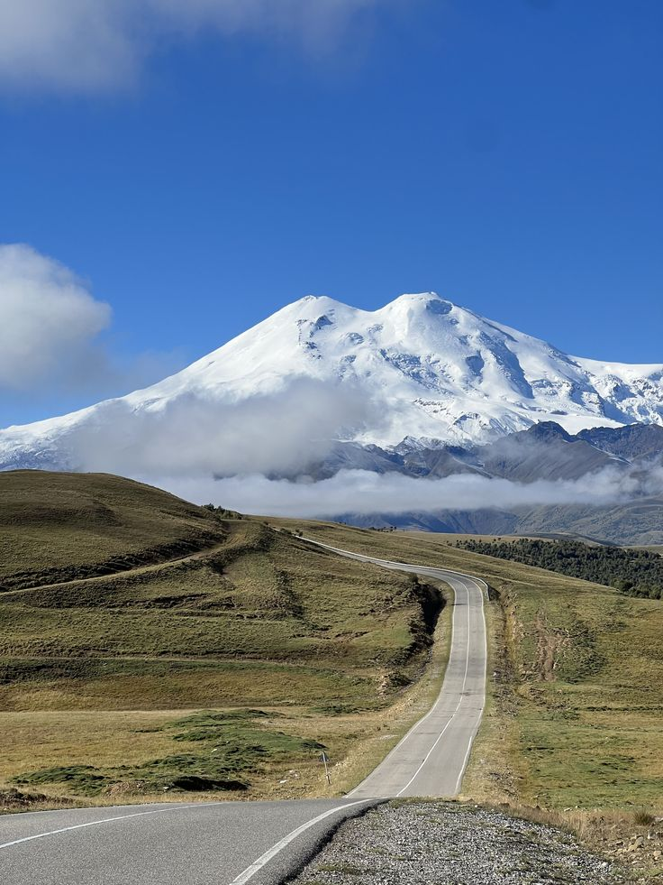
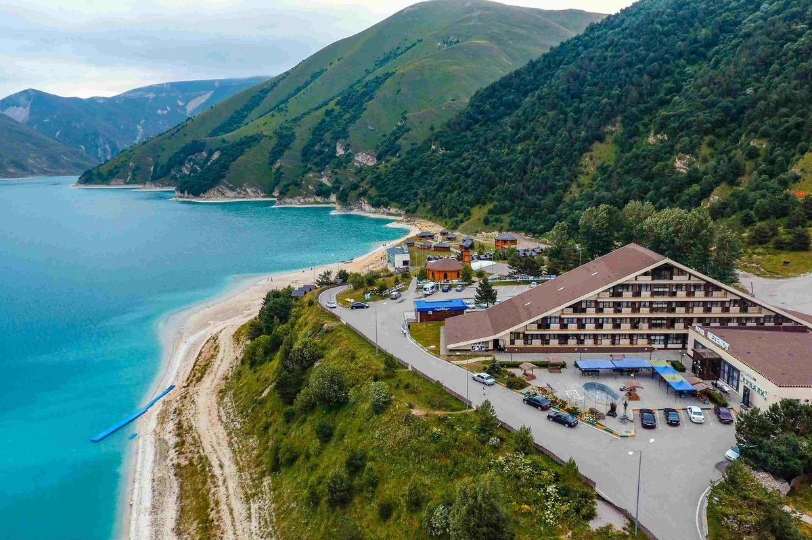
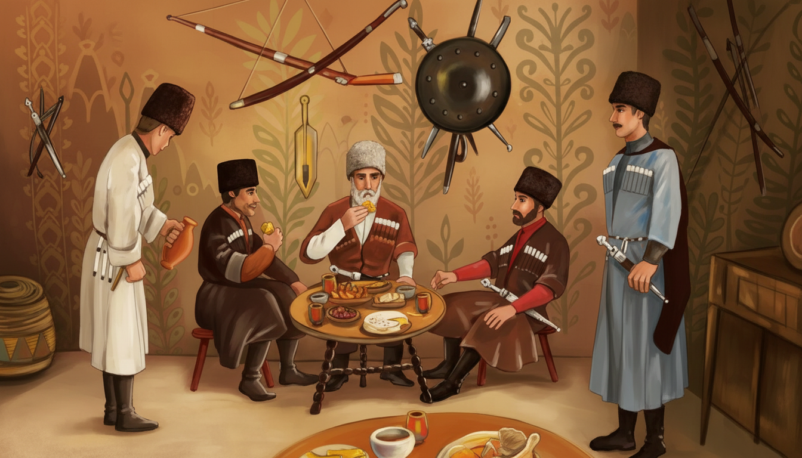
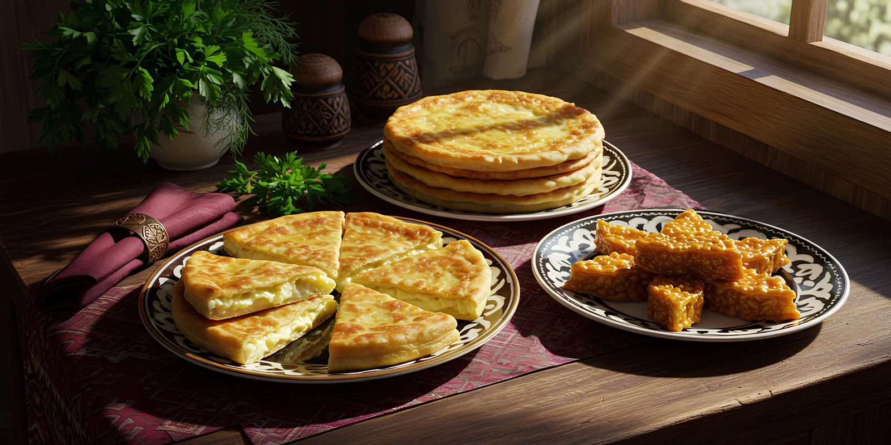
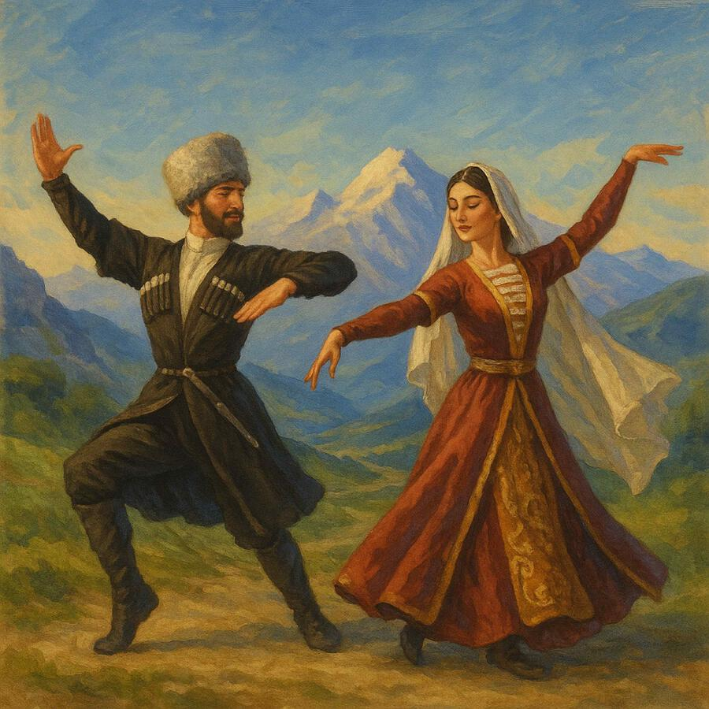
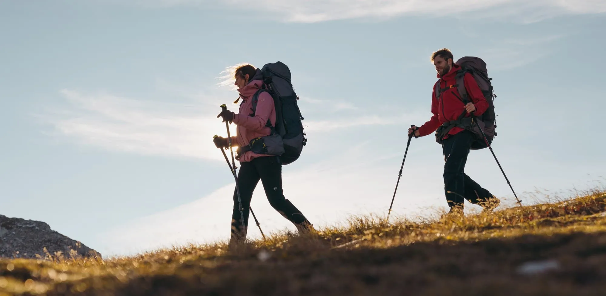
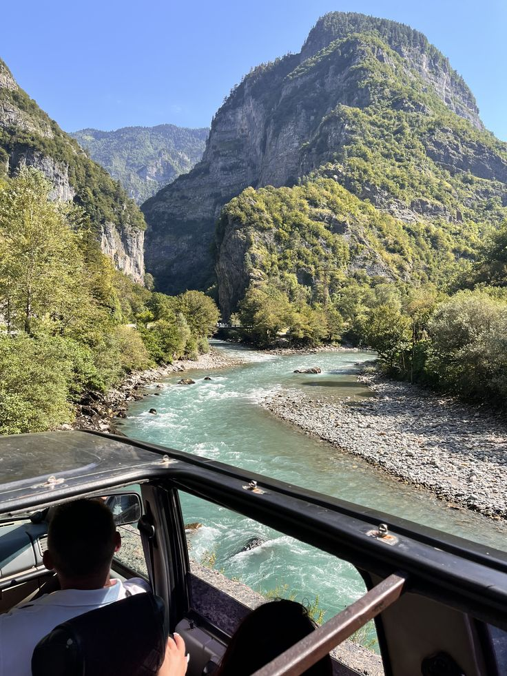

Северный Кавказ: где горы встречают традиции
Активный отдых, древняя культура и гостеприимство — откройте для себя настоящий Кавказ
О регионе
Северный Кавказ — край удивительного многообразия: здесь соседствуют суровые пятитысячники и зелёные альпийские луга, древние башни и шумные водопады. Республики Карачаево-Черкесия, Кабардино-Балкария, Северная Осетия, Ингушетия, Чечня и Дагестан хранят уникальные традиции, ремёсла и кухню. 6 из 10 высочайших вершин России находятся именно здесь, включая двуглавый Эльбрус (5642 м).
Путешественников ждут захватывающие трекинги, рафтинг, горнолыжные курорты и, главное, искренняя культура, где каждый гость — подарок судьбы.
«Æрдзы фæлтæрæн нæй фарн» (в гостях не ищут вины).
Места, которые нужно увидеть




Душа Кавказа: обычаи, которые живы веками

Гостеприимство и куначество
Гость на Кавказе — посланник Бога. Куначество — древний обычай побратимства, где даже незнакомцу откроют дверь и накормят самым лучшим. За столом старший произносит тосты за Бога, родителей и гостя. Отказаться от угощения трижды — не принято.

Национальная кухня
Осетинские пироги с сыром, картофелем, фасолью; балкарские хычины; чеченский жижиг-галнаш; дагестанские чуду; шашлык на виноградной лозе. Обязательно айран и кавказский мёд. Каждое блюдо — часть ритуала гостеприимства.

Танцы и музыка
Лезгинка — танец, объединяющий народы Кавказа. Символизирует орла и горянку. На свадьбах танцоры соревнуются часами. Народные инструменты: зурна, гармоника, барабан. Танец включён в нематериальное наследие ЮНЕСКО.
Приключения для каждого


